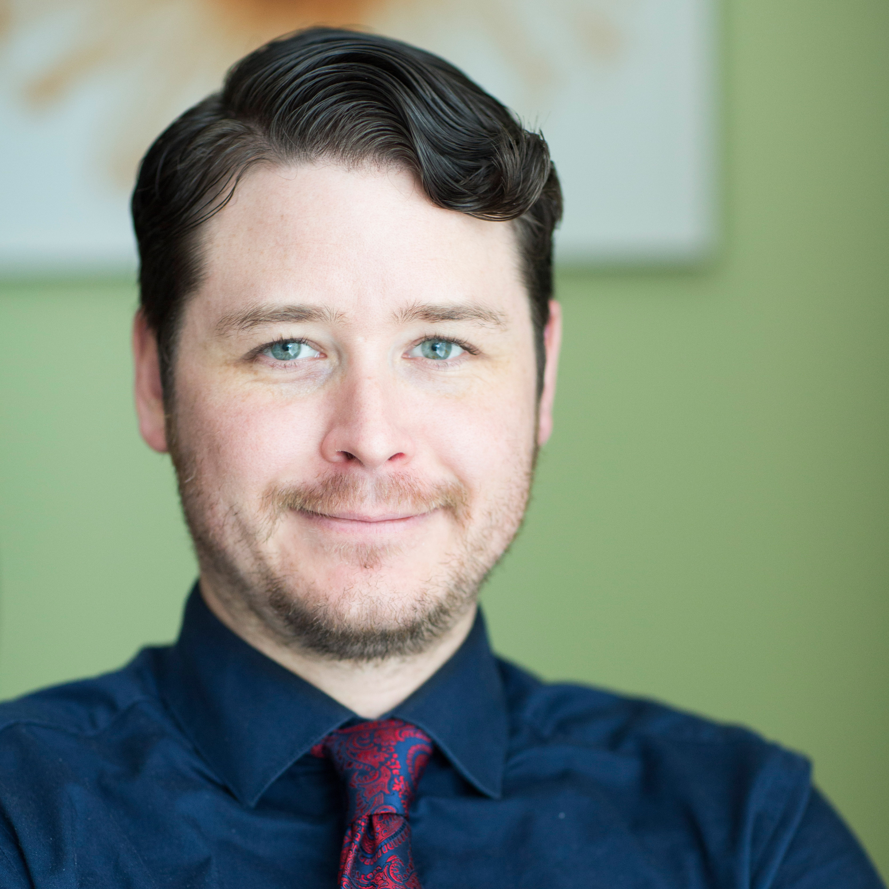

About Me
I grew up in northern Colorado on the cusp of the Rocky Mountains. It was here that I developed my love of photography and my passion for design. After taking a break from school and working some odd jobs I decided to finish my degree in a new place; so I packed my bags and moved to Portland Oregon.
Portland State University was where I finished my B.S. in economics. I met my lovely wife while living in Portland. After a few years, some topsy turvy times, underwhelming job prospects and new ideas on what we wanted to do professionally we packed our bags and, together drove across the country (twice) to 'Hotlanta'. My wonderful wife was accepted to law school at Emory University and has since graduated and started her own firm (if you need a civil rights or consumer protection lawyer I might know someone.)
Atlanta is where we find ourselves today as we continue to learn, live, grow, and work. We have a humble home, cats, a lovely garden, and friends but we can always use more! Thanks for stopping by my webpage and hit me up if you see anything that strikes your fancy!